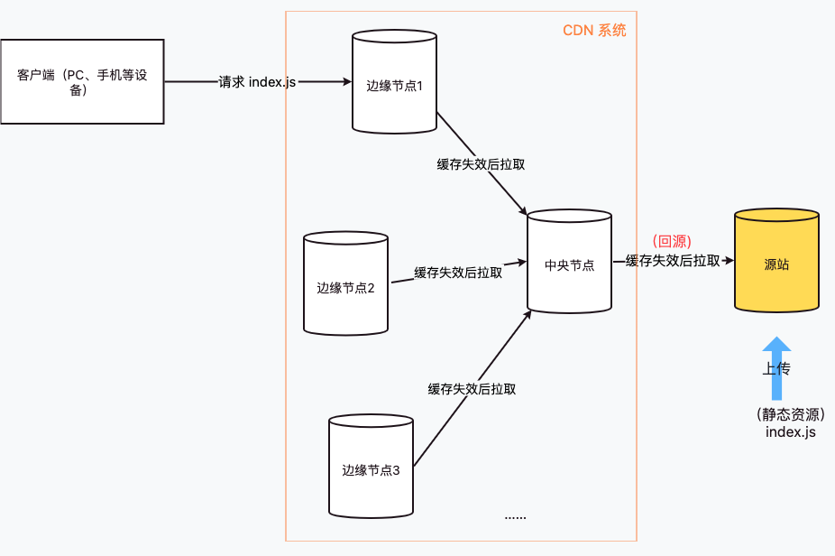
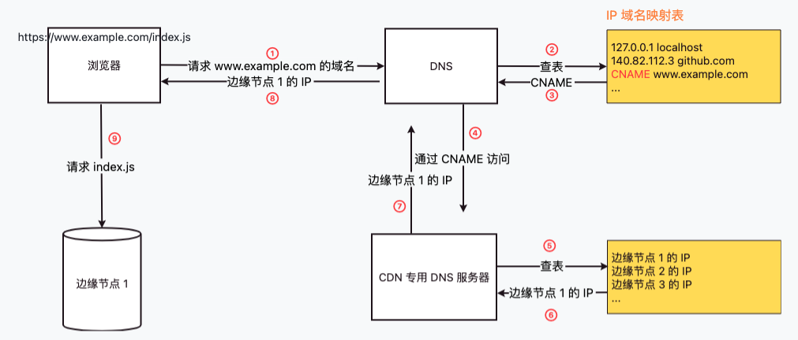

CDN
定义
是什么
CDN 为内容分发网络（Content Delivery Network），原理是提供各种缓存服务器，让用户在访问资源时，利用负载均衡技术使用户访问到最近的服务器上。
有什么用
解决网络拥堵状况，提高用户访问资源的速度。
上传资源
CDN 的组成部分
从功能上划分：
- 分发服务系统：负责资源的响应、缓存和同步
- 负载均衡系统：负责均衡单点多个内容缓存设备的负载，对内容进行缓存负载平衡和访问控制
- 运营管理系统：负责运营需求管理和网络系统管理
从节点分布查看：

每个边缘节点都是台静态资源服务器，分布在世界各个地方
缓存控制
边缘节点和中央节点存储了缓存资源，如果源站的资源发生了更新，CDN 节点如何感知并获取最新的资源，通常有两种方案：
- 源站更新后 push 刷新所有 CDN 缓存
- 给 CDN 缓存设置一个固定的过期时间，过期后缓存失效，就会去拉取最新资源
下载资源
访问流程
以在浏览器访问 https://www.example.com/index.js 为例

可以看到，DNS 不会直接拿到 www.example.com 的 IP，而是拿到 CNAME（Canonical Name / 别名记录），该别名记录指向了 CDN 的负载均衡服务器，服务器根据以下指标选择最优的边缘节点的 IP 返回：
- 用户 IP 地址，找到最近的边缘节点
- 用户所在的运营商网络，找到相同网络的边缘节点
- 边缘节点的负载情况，选择负载较轻的边缘节点
- 其他指标，如监控状况、服务能力、带宽、响应时间等
命中与回源
上图中的步骤 ⑨ 浏览器向边缘节点 1 请求 index.js，如果边缘节点存在该缓存资源，则称之为命中缓存资源，反之则：
- 边缘节点 1 向中心节点请求资源
- 若中心节点也未命中缓存资源，则到源站服务器获取资源，该行为成为回源
通常来讲，现在的商业 CDN 命中率都在 90% 以上。
 目录
目录